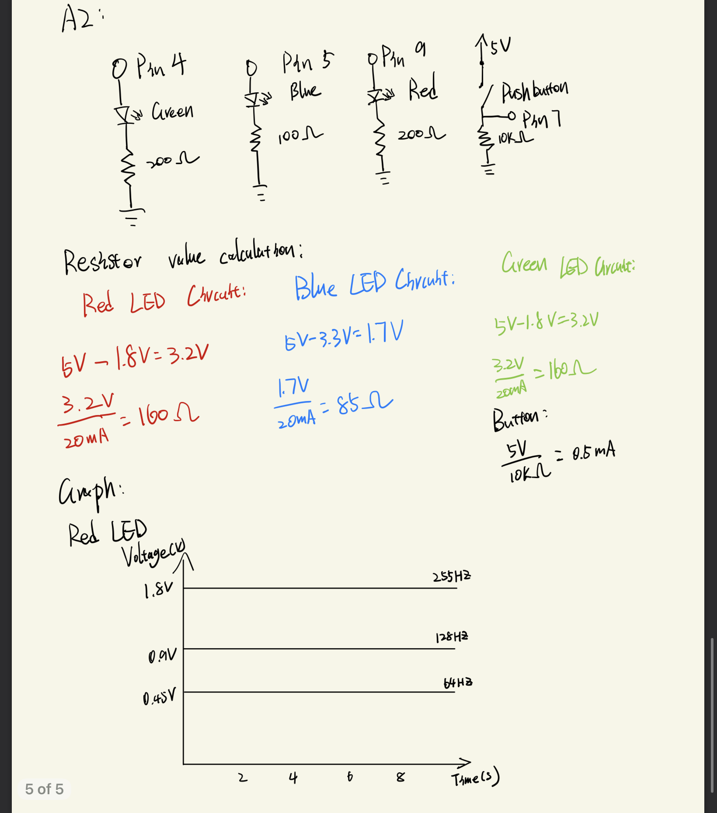

Circuit Photo

This is the circuit setup. The red LED is connected to port 9, the blue LED to port 5, the green LED to port 4.
Circuit schematic, resistance calculation and graph
This image shows the schematic, resistance calculation, and a graph of time vs. voltage. I used a resistor with a slightly higher resistance than calculated because the exact value wasn’t available, and I preferred to limit current for safety. To restrict the current through the button, I added a 10 k resistor, ensuring only about 0.5 mA flows through the circuit, which is within a safe range.
Circuit operation

This GIF shows the circuit in operation. The green LED remains on continuously, while pressing the button causes the red LED to start at maximum brightness and gradually fade out, as the blue LED begins at zero brightness and gradually brightens.
Code Snippet
// the number of the red LED pin
int redPin = 9;
// the number of the blue LED pin
int bluePin = 5;
// the number of the digital output pin(green)
int digitalPin = 4;
// the number of the pushbutton pin
int buttonPin = 7;
// variable for reading the pushbutton status
int buttonState = 0;
void setup() {
// initialize the button pin as an output:
pinMode(buttonPin, INPUT);
// initialize the digital pin as an output:
pinMode(digitalPin, OUTPUT);
// initialize the red LED pin as an output:
pinMode(redPin, OUTPUT);
// initialize the blue LED pin as an output:
pinMode(bluePin, OUTPUT);
}
void loop() {
// read the state of the pushbutton value:
buttonState = digitalRead(buttonPin);
// turn digital pin on
digitalWrite(digitalPin, HIGH);
// check if the pushbutton is pressed. If it is, the buttonState is HIGH:
if (buttonState == HIGH) {
// setting up the loop for the dimming/illuminating LEDs
for (int fadeValue = 255; fadeValue >= 0; fadeValue--) {
// fade out from max to min in increments of 1 points:
analogWrite(redPin, fadeValue);
// fade in from min to max in increments of 1 points:
analogWrite(bluePin, (255-fadeValue));
// wait for 10 milliseconds to see the dimming effect
delay(10);
// if the pushbutton is not pressed
}
} else {
// turn red LED off
analogWrite(redPin, 0);
// turn blue LED off
analogWrite(bluePin, 0);
}
}
Additional Questions
1. See Circuit schematic, resistance calculation and graph image above.
2. If the button is not pressed, the circuit draws about 20 mA, giving a runtime of approximately 1200 mAh ÷ 20 mA = 60 hours. When the button is held down, the board draws around 40 mA—with the green LED consuming about 20 mA and the red and blue LEDs averaging 10 mA each during the fading process. This results in a runtime of 1200 mAh ÷ 40 mA = 30 hours. Assuming the button is not held continuously, the total runtime ranges between 30 and 60 hours.
3. I measured the voltage across the green LED to be 2.7 V. Although we initially learned that a green LED typically has a 1.8 V forward voltage, I did some research and they show that green LEDs can have voltage drops ranging from 1.8 V to 3.0 V, which aligns with my observation.
All documentation for Assignment 2 is included above.